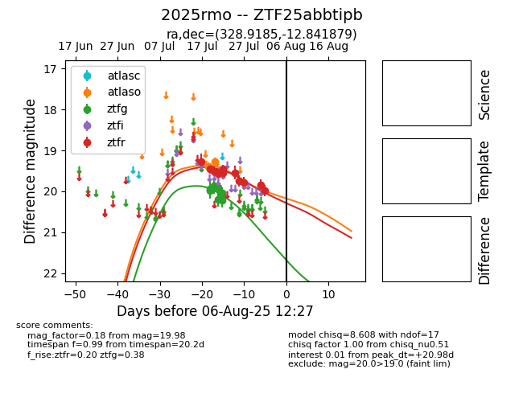

Target 2025rmo at 2025-08-06 17:07, see:
FINK: fink-portal.org/2025rmo
Lasair: lasair-ztf.lsst.ac.uk/objects/2025rmo
ALeRCE: alerce.online/object/2025rmo
TNS: wis-tns.org/object/2025rmo
YSE: ziggy.ucolick.org/yse/transient_detail/2025rmo
alt names
ZTF25abbtipb (ztf,fink)
2025rmo (tns,yse)
coordinates:
equatorial (ra, dec) = (328.9185,-12.84188)
galactic (l, b) = (43.1794,-46.56531)
photometry
last atlaso=19.27, ztfg=20.11, ztfr=19.98
2 atlaso, 9 ztfg, 11 ztfr detections
